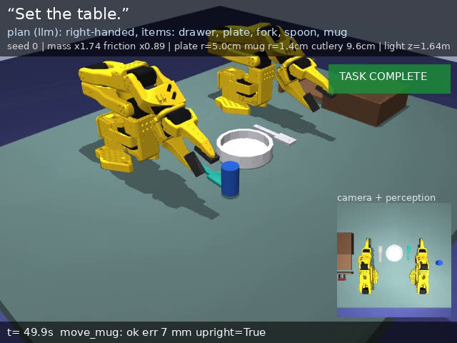
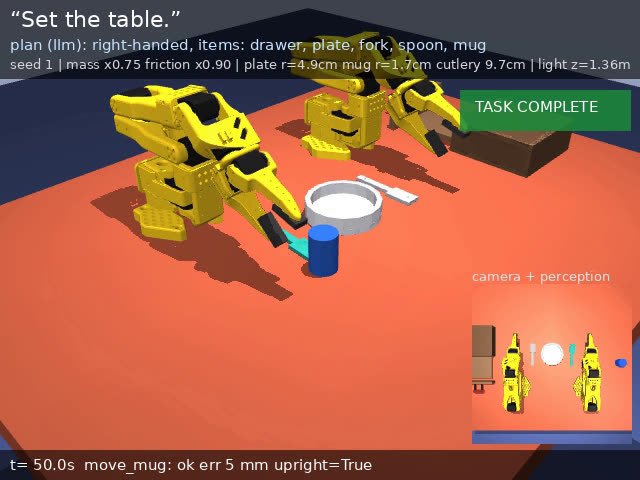
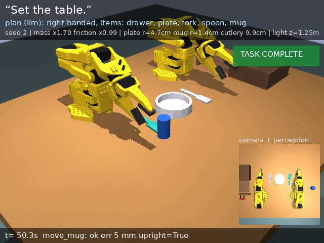
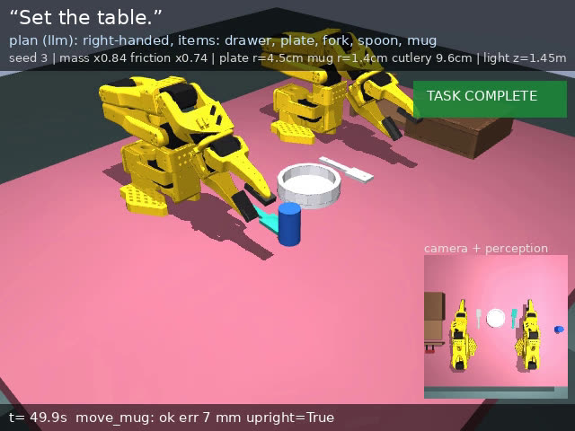
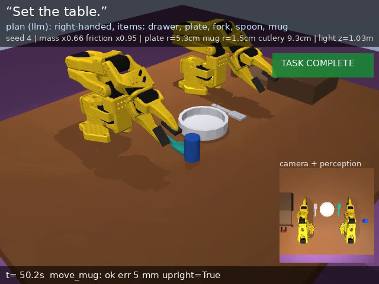
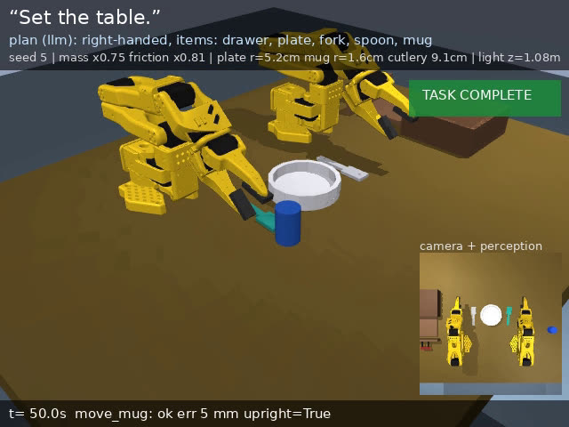
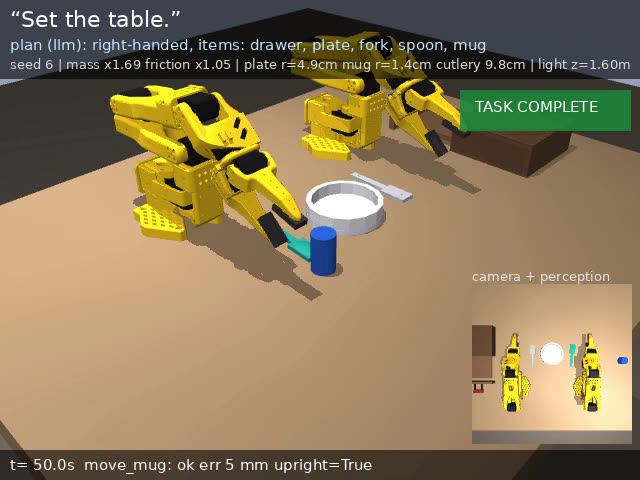
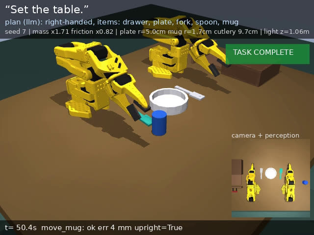
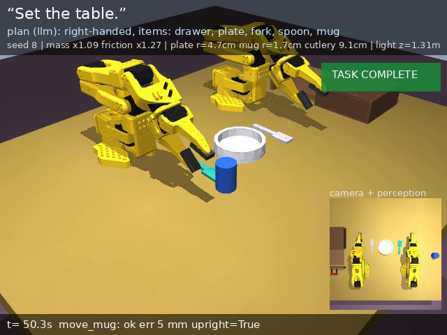
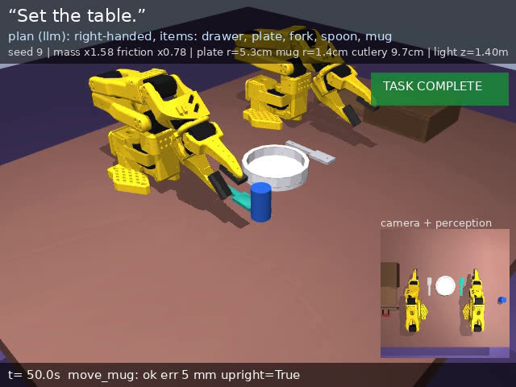

Intel Physical AI Online Challenge · Bimanual VLA Manipulation · Team META FETA
Two SO-101 arms set a dinner table from a language command
MuJoCo simulation. An OpenVINO INT4 language model plans, an OpenVINO INT8 camera network localises objects, and inverse-kinematics skills drive both arms, including a spoon hand-off between them.
GitHub repositoryDownload video
Evaluation across 10 randomized seeds
Narrated walkthrough (2:39): one full run of seed 0 with its hand-off, then all 10 randomized seeds sped up, then the final table state for every seed.
Pipeline
1 · Understand
Qwen2.5-1.5B-Instruct, INT4, served with OpenVINO GenAI, turns the instruction into a JSON plan: items, arm assignment, handedness. A left-handed request mirrors the layout.
2 · Observe
An overhead camera feeds a small U-Net segmentation model (OpenVINO INT8). Object poses come from the image, not from simulator state.
3 · Act
Damped-least-squares IK skills for both arms: open drawer, retrieve cutlery, hand off through a shared staging zone, place plate, fork and mug.
4 · Optimize
INT4 planner and INT8 perception. The bench script reports latency, throughput, device and precision for CPU, iGPU and NPU.
Per-seed results: seeds 0–9, as shown in the video
| Seed | Mass | Friction | Plate r | Mug r | Cutlery | Light z | Final mug placement error | Sim time | Outcome |
|---|---|---|---|---|---|---|---|---|---|
| 0 | ×1.74 | ×0.89 | 5.0 cm | 1.4 cm | 9.6 cm | 1.64 m | 7 mm | 49.9 s | ✓ complete |
| 1 | ×0.75 | ×0.90 | 4.9 cm | 1.7 cm | 9.7 cm | 1.36 m | 5 mm | 50.0 s | ✓ complete |
| 2 | ×1.70 | ×0.99 | 4.7 cm | 1.4 cm | 9.9 cm | 1.25 m | 5 mm | 50.3 s | ✓ complete |
| 3 | ×0.84 | ×0.74 | 4.5 cm | 1.4 cm | 9.6 cm | 1.45 m | 7 mm | 49.9 s | ✓ complete |
| 4 | ×0.66 | ×0.95 | 5.3 cm | 1.5 cm | 9.3 cm | 1.03 m | 5 mm | 50.2 s | ✓ complete |
| 5 | ×0.75 | ×0.81 | 5.2 cm | 1.6 cm | 9.1 cm | 1.08 m | 5 mm | 50.0 s | ✓ complete |
| 6 | ×1.69 | ×1.05 | 4.9 cm | 1.4 cm | 9.8 cm | 1.60 m | 5 mm | 50.0 s | ✓ complete |
| 7 | ×1.71 | ×0.82 | 5.0 cm | 1.7 cm | 9.7 cm | 1.06 m | 4 mm | 50.4 s | ✓ complete |
| 8 | ×1.09 | ×1.27 | 4.7 cm | 1.7 cm | 9.1 cm | 1.31 m | 5 mm | 50.3 s | ✓ complete |
| 9 | ×1.58 | ×0.78 | 5.3 cm | 1.4 cm | 9.7 cm | 1.40 m | 5 mm | 50.0 s | ✓ complete |
Table colour and lighting also change per seed. Values are read from the video overlays.
Final table state, every seed










Scope
Learned
- LLM task planner (INT4)
- Camera segmentation network (INT8)
Scripted
- IK manipulation skills and hand-off
Not yet done
- Benchmark on Intel Core Ultra (numbers so far are from a cloud CPU)
- Distilled imitation policy
- Pouring
The simulation and models run locally (MuJoCo + OpenVINO). This page presents the recorded evaluation.